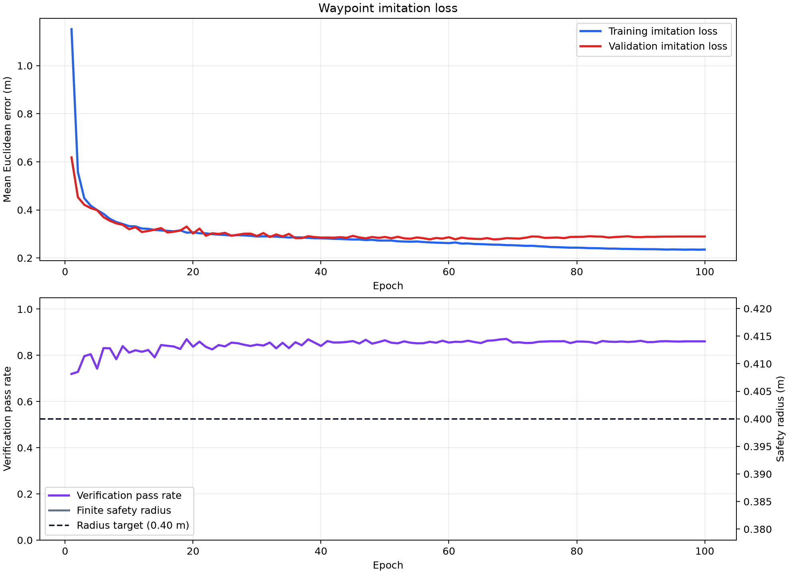

Component Diagnostics

Selected checkpoint: /projects/bhkj/pgupta12/starling_multiple_trajectory_idea/src/llm_vision_planner/fine_tuning/outputs/final-transformer-vertical-teacher_only_80_10_10/model/checkpoint-epoch-067
Each row uses the same scene, start, and goal. Only the preference changes. The displayed coordinates are raw model outputs before refinement, verification, or QP.
| Sample | Preference | Interior mean (m) | Full-route mean (m) | Actual coordinates |
|---|---|---|---|---|
scene-000005-goal-00-pref-00 | Take the quickest collision-free way to the destination. | 0.055 | 0.049 | WaypointsTeacher[[-0.4986000061035156,-1.8912999629974365],[-0.8322645425796509,-1.411257266998291],[-1.1659290790557861,-0.9312146902084351],[-1.4995936155319214,-0.45117202401161194],[-1.8332581520080566,0.028870610520243645],[-2.0576319694519043,0.556168794631958],[-2.1788158416748047,1.128084421157837],[-2.299999952316284,1.7000000476837158]]Transformer [[-0.48920488357543945,-1.911771535873413],[-0.8209869861602783,-1.4115078449249268],[-1.1453449726104736,-0.920952320098877],[-1.4746301174163818,-0.4228506088256836],[-1.7564771175384521,0.0712888240814209],[-1.955460786819458,0.6225094795227051],[-2.1505188941955566,1.1684513092041016],[-2.326948881149292,1.7287554740905762]] |
scene-000005-goal-00-pref-01 | Give every obstacle the widest practical berth. | 0.057 | 0.051 | WaypointsTeacher[[-0.4986000061035156,-1.8912999629974365],[-0.9217531085014343,-1.4760268926620483],[-1.3237550258636475,-1.0439444780349731],[-1.6327569484710693,-0.5379524230957031],[-1.9417588710784912,-0.03196035698056221],[-2.0976932048797607,0.5316197276115417],[-2.1988465785980225,1.1158099174499512],[-2.299999952316284,1.7000000476837158]]Transformer [[-0.4914698600769043,-1.9107252359390259],[-0.8798232078552246,-1.4452078342437744],[-1.2507848739624023,-0.9852504730224609],[-1.5912611484527588,-0.4997122287750244],[-1.8718185424804688,0.004161834716796875],[-2.0666048526763916,0.5594239234924316],[-2.20353364944458,1.136652946472168],[-2.3393077850341797,1.715064525604248]] |
scene-000005-goal-00-pref-02 | Choose a reasonable compromise between speed and spacing. | 0.038 | 0.037 | WaypointsTeacher[[-0.4986000061035156,-1.8912999629974365],[-0.8322645425796509,-1.411257266998291],[-1.1659290790557861,-0.9312146902084351],[-1.4995936155319214,-0.45117202401161194],[-1.8332581520080566,0.028870610520243645],[-2.0576319694519043,0.556168794631958],[-2.1788158416748047,1.128084421157837],[-2.299999952316284,1.7000000476837158]]Transformer [[-0.4895751476287842,-1.9138777256011963],[-0.8573131561279297,-1.4292914867401123],[-1.2126898765563965,-0.954740047454834],[-1.566117763519287,-0.47432422637939453],[-1.8692903518676758,0.012431144714355469],[-2.063060760498047,0.5628824234008789],[-2.202868938446045,1.1361494064331055],[-2.3355190753936768,1.7268500328063965]] |
scene-000005-goal-00-pref-03 | Give the person (person-1) extra space. | 0.037 | 0.035 | WaypointsTeacher[[-0.4986000061035156,-1.8912999629974365],[-0.9217531085014343,-1.4760268926620483],[-1.3237550258636475,-1.0439444780349731],[-1.6327569484710693,-0.5379524230957031],[-1.9417588710784912,-0.03196035698056221],[-2.0976932048797607,0.5316197276115417],[-2.1988465785980225,1.1158099174499512],[-2.299999952316284,1.7000000476837158]]Transformer [[-0.49236011505126953,-1.9140948057174683],[-0.9264707565307617,-1.4782072305679321],[-1.3241701126098633,-1.0375456809997559],[-1.6235225200653076,-0.5316605567932129],[-1.8512182235717773,0.005883216857910156],[-2.0240540504455566,0.5573780536651611],[-2.180969715118408,1.1335978507995605],[-2.330425262451172,1.7176733016967773]] |
scene-000005-goal-00-pref-04 | Without violating clearance, stay near the chair (chair-2). | 1.692 | 1.277 | WaypointsTeacher[[-0.4986000061035156,-1.8912999629974365],[0.27324140071868896,-1.282325029373169],[1.0450828075408936,-0.6733500361442566],[1.0125771760940552,0.1778281033039093],[0.48526906967163086,0.9403387308120728],[-0.34888389706611633,1.4560611248016357],[-1.324441909790039,1.5780305862426758],[-2.299999952316284,1.7000000476837158]]Transformer [[-0.4889054298400879,-1.912454605102539],[-0.7058725357055664,-1.3818941116333008],[-0.9454421997070312,-0.8646578788757324],[-1.296189546585083,-0.368685245513916],[-1.6235542297363281,0.11113286018371582],[-1.8426122665405273,0.6688563823699951],[-2.0755388736724854,1.2054166793823242],[-2.3300070762634277,1.730900764465332]] |
scene-000005-goal-00-pref-05 | Meet a 14.01-second deadline and use the clearest feasible route. | 0.054 | 0.048 | WaypointsTeacher[[-0.4986000061035156,-1.8912999629974365],[-0.9217531085014343,-1.4760268926620483],[-1.3237550258636475,-1.0439444780349731],[-1.6327569484710693,-0.5379524230957031],[-1.9417588710784912,-0.03196035698056221],[-2.0976932048797607,0.5316197276115417],[-2.1988465785980225,1.1158099174499512],[-2.299999952316284,1.7000000476837158]]Transformer [[-0.49141645431518555,-1.914794683456421],[-0.8790934085845947,-1.4374773502349854],[-1.2487664222717285,-0.9733662605285645],[-1.6063728332519531,-0.48594236373901367],[-1.8957018852233887,0.008829593658447266],[-2.084232807159424,0.5564060211181641],[-2.2091312408447266,1.128769874572754],[-2.3282198905944824,1.7232589721679688]] |
